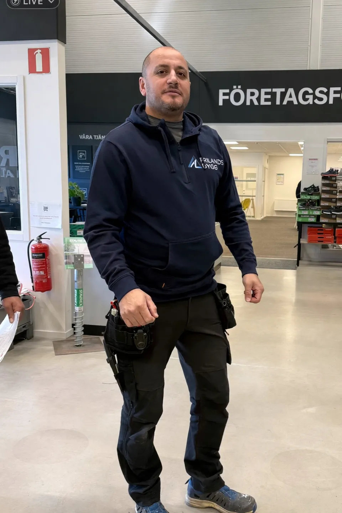

Nära till hands.
Noga med detaljerna.
Vi tror på personligt bemötande, bra material och hantverk att vara stolt över.

Erhan Baksi Projektledare & arbetsledareVi bygger hus.
Och förtroende.
Det ska kännas bra att släppa in någon i sitt hem. Hos Frilands möter du Erhan och ett personligt engagemang för ditt bygge.
Med över 20 års erfarenhet inom bygg tar vi oss an både mindre arbeten och större förändringar. Vi lyssnar, planerar och bygger med stolthet.
Kvalitet i arbetet.
Respekt för resurserna.
Kvalitet & personlig service +
Vi utgår från kundens behov, väljer utförande och material med omsorg och arbetar med personlig service. Företagets kvalitetspolicy betonar tydliga överenskommelser, yrkesstolthet och löpande utveckling.
Material & miljö +
Vi arbetar med avfallssortering, återvinning och planering av transporter. Genom dialog med leverantörer och kunder söker vi material och lösningar som passar både byggnaden och projektet.
Försäkring & samarbeten +
Frilands uppger entreprenad- och ansvarsförsäkring. Vi samarbetar med behöriga elektriker och VVS-installatörer. Fråga oss gärna om försäkring och dokumentation för ditt specifika uppdrag.